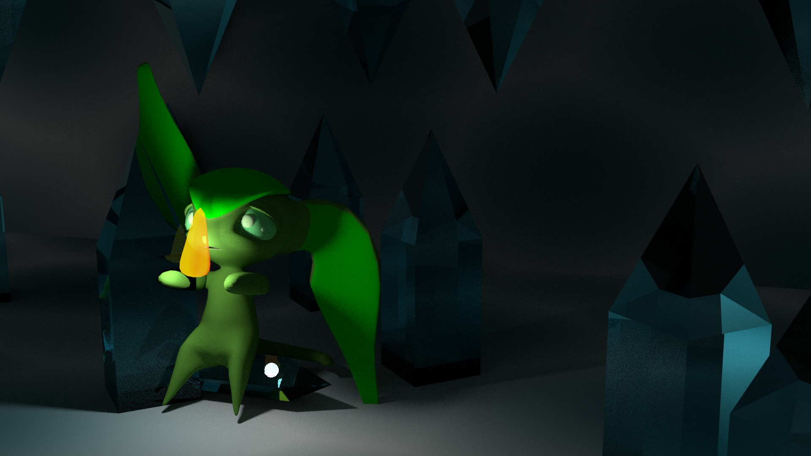
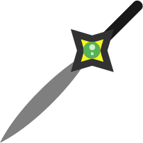

Their green eyes can observe and copy the properties of the elements around them, to make them as strong as the other imps. They use the green alpha stone to connect them to the elements of the world, but with it gone, what can they do?
An Envy Impla stuck in an ice cave and using it's abilities to create fire.
The Envious imps are all green with different shades of green eyes. They are only jealous of other green items, so to stay in their good graces, keep the color green out of their sight. These imps do not like each other and are spiteful of how green another imp is. They have the ability to copy nature’s abilities and use them for a while and their bodies are made from a plant like fiber that can change their body density, strength, speed, and their whole biology, to adjust to the element of their choice. They love to collect things that are green only, even if they can’t use it. They don’t really like the other races of imps, but tolerate them due to their need to trade for more green materials. An envious imp is the only imp that can have green eyes, but their bodies can vary in color from time to time. This is how other imps can tell that an imp will have spiteful tendencies, to want what the other imps have, in terms of abilities like speed and strength.
Envy Imps can use items with green stones in them, infusing them with their elemental power.
Envy imps can infuse their more durable elemental elements, like ice to make armor have special effects. Electicly charged armor can shock opponents while fire charged armor will burn them.
Envy imps trade with Greed imps for green gems to embued their powers into weapons for later use.